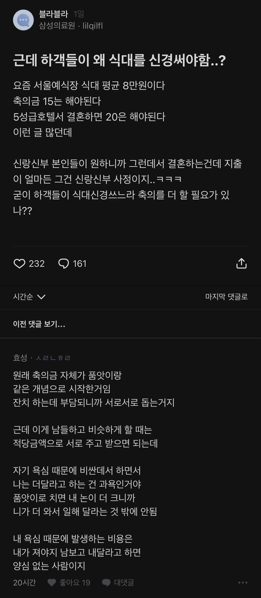

돈 끌어다 쓸 수단이 있다고 보니까 허영부리고 허영받아주고 그러는 거 같음
이게 다 월급이 안올라서그럼
축의금은 두배인데 월급은 그대로...? ㅈㄴ부담이지
얼만지 얘기도안했음
그냥 와주면 고맙고 감사한거지
안줘도 그사람 사정이있었겠지 싶을뿐임
내결혼식 당시에 상황 어려웠던 진짜 친한애한텐 그냥 와서 밥먹고 가라고 둘러둘러 얘기했는데
기어코 돈 내고갔지만
그것만으로도 고마웠음
차비 주냐
저딴새기가 요즘 sns 인스타에 브라이덜 샤워나 결혼식 화려한데 이런데서 했다고 자랑글 올리는 놈련들이랑 다를게 없음. 그냥 욕심만 많음. 이건 당연하고 저건 당연하고 이래야 됨.
식대가 10을 안넘을거 같으면 마음이 편하고 식대가 10을 넘는곳 같으면 그런거 신경 안쓸 사람일 확률이 높다는 결론에 도달하고 나서부터는 마음이 정말로 편해짐
어차피 남으면 환불도안됨 와주면 감사해해야함
그렇지 우리형 결혼할때도 양가 1번째이고 처가쪽에선 사업하는 사람이라 진짜 널널하게 잡아놔서 내친구까지 부른 기억이 있다
요즘엔 30만원 이상 줄정도로 친한거 아니면 안가고 안줌. 그게 편해~
식대가 얼마고 나발이고 난 이런 새끼는 그냥 안왔으면 좋겠음. 그냥 오지마 ㅅㅂ 식대가 얼마고 축의금이 얼마고 그딴거 신경쓸 경조사를 니가 왜 오는데... 사회생활이면 그냥 군말없이 하든가 ㅅㅂ
결혼안하면 돈 돌려줌? ㅋㅋ
예식장들 비싸졌는데 10만원 받으면 못함 추가 지출해야함
예식장이 자기가 갑 위치인걸 알아버린게 문제야
가격 올려도 한 번 뿐인 결혼식...안할꺼야?
시장파괴자가 가격경쟁 하거나 예식거부 운동 안일어나면 정상화 못해
존나 무리를 해서라도 꾸역꾸역 가서 예식장을 갑으로 만드는 병신들이 있지.
검소하면 죽는 병에 걸린거 같음.
‘한번뿐인 결혼식 인데…’
이게 여자들 지능 -35%디버프 거는 주문임
한번뿐인지 알수도 없고
두번째엔 그럼 물떠놓고 초켜두고 할것도 아니잖음
조까 언제부터 시발 품앗이였어
걍 10만이다 좋은날이니 와서 축하해달라 이런거 아니었음?
옛날처럼 관광버스 대절해서 태워주기라도 하는 것도 아니고
? 지방출신인데 서울에서하거나 서울에자리잡았는데 지방에서결혼식하거나하면 요새도 다 대절해;
?해줌
타지에서 할 때는 하지
돈없으면 씨부레 집에서 출장뷔페 불러서해라
이건 개소리지 식사 싸구려로 나오면 하객이 욕함 <-> 축의금 적게 내면 신랑,신부가 욕함 걍 쎔쎔임
근데 이런 얘기 왜 나오는지 아냐? 축의금 내는게 아까운 사이면 걍 쌩까면 되는데 찐따 새끼들은 그걸 못 함
누가 청첩장 줬는데 축의금 내자니 아깝고 쌩 까자니 욕 먹을거 같아서 자꾸 개소리 하는거
그러고 자기 합리화는 오지게 함 사회생활이 어쩌고 저쩌고 ㅋㅋ 에라이 개호구 찐따새끼들아
니들이 그렇게 친구비 뿌리고 다닌다고 상대방은 너네들 친구라고 생각 안 함 대부분 나중에 쌩 깔거다
1. 어찌 되건 식을 올려야 하는 상황임
2. 하객들이 주로 어디에서 오나 봄 (직장동료가 반이니 거의 서울임)
3. 교통을 고려하면 선택지가 일단 줄어들음 (주차장도 봄)
4. 너무 더울때는 하객들이 힘드니까 10-12,1-3 월로 식 일정을 잡음
5. 그 선택지들 사이에서 가격대를 알아봄, 요일 시간 성수기 등등 고려해서
6. 몇몇 예식장 후보들을 직접 가서 밥을 먹어봄. 보통 6-8만원대임
7. 6만원은 매우 실망스러움, 8만원은 고급 해산물 뷔페랑 비슷한 느낌이 남
8. 어차피 축의금은 5만원 단위로 올라가는데 실질적으로 우리에게 남는 하객당 축의금 차액이 줄어들어도 그냥 밥이 더 맛있는데를 택함
9. 이 과정을 직접 겪어보고는 내가 하객으로 갈때 최소 15만원을 주게 됨
물론 사람마다 입장이 다를 수 있음 이해함
근데 내가 하객인 입장에서는 어차피 축의금은 관계에 따라 참석여부와 하한선이 정해지는데, 가기 어렵고 음식 퀄이 떨어지는데로 부르고 싶지 않았음.
사실 축의금보다 덜 편한 옷 입고 주말에 멀리까지 시간 맞춰서 하객석 채워주는 것이 얼마나 감사한걸 알기 때문에 하객들 편의를 고려하고 최대한 맛있는 음식으러 대접하고 싶었음
그리고 나를 하객으로 부르는 지인들도 똑같은 고민을 했을거라고 가정하고 축의금을 냄
알빠노마인드로 친구들 아니면 어디서하든 참석하면 10만원 안가면 5만원함
밥장사 하고싶으면 청첩장에 최소식대 1인당 얼마 하고 적어놔라
난 그냥 안 가고 5만원 보냄 ㅋ
나는 내가 해어진 뒤로 결혼 할지 안 할지도 몰라서 걍 기록해두는거 없이 10~20사이에서 식대따라 주는중임
20도 딱 한번 식대가 거의 인당 15길래 준거고 보통 10~15였음
중학교~대학교 친구는 20~50주고
축하해달라고 불러서 갔더니
결혼식 엔빵해달라니 얼척이없지
식대보다는 그냥 친분에 따라서 액수 정하는 거 같음
디폴트는 가면 10 안가면 5고
지가 결혼하면서 초대해놓고 식대 어쩌고 하는 것들은 대가리 깨진 새끼들임
난 결혼할때 그냥 식 비용은 어차피 온 사람들 대접하는 나가는 돈이라고 생각하고 함
근데... 이 품앗이...내가 10씩냈는데
5로주거나 쌩까는애들 패버리고싶음...
쌩까는 시발럼들은 전화해서 축의한거 보내라 지르고 연 끊자 어차피 연 끊을꺼 ㅋㅋ
생각해보니 그렇다..
그렇게 비싼데서 하는 사람은 본인이 좀 더 낸다는 거 감안하고 하는게 보통이니까
축의금이 품앗이지만...
당연한게 수익자 부담의 원칙을 지켜야 함
비싼데서 한다 = 신랑신부와 그 부모 가오가 산다
하객이 가오 사는게 아님
그러니까
가오가 사는 이익을 신랑신부와 그 부모가 얻으니까
그들이 부담 해야 함
그렇긴 한데
그냥 좋은 자리니까 서로 좋게좋게 하는거지
결혼 당사자들도 와주는거에 고마움을 느끼고, 하객들도 축하하는 마음담고 하는거지 뭐
그렇게 계산적으로 나누면 서로 피곤하잔아
이말대로면 본인 결혼식땐 이익이지만 그만끔 하객을 참여할때마다 손해를 보는건데 이익이라고 할 수도 없지
결혼하는 부부가 자기네 돈으로 감당할 수 있는 규모로 하면 되는데
축의금이 얼마가 들어올듯하니 호텔에서 할 수 있겠다 라는 식으로 생각하는 순간, 꼬이는거지
진짜 10밖에 안준다고 찡찡대는 새끼 있으면 인중 주먹으로 개쎄게 때려도 무죄임
씨발 그냥 결혼식 점심은 옛날처럼 잔치국수로 통일하면 될텐데 뭔씨발 밥한끼에 8만원이여
식대 신경쓰면 앞으로 다 안간고 걍 5-10만원만 내고 끝내버린다치자 그럼 결혼식 진행하는 신혼은 과연 좋을까 ? ㅋㅋ 하객석도 텅텅에다 사진찍는데 아무도 안나오는거 개욱길듯
근데 막상 결혼하는 당사자들은 축의 얼마해서 밥 먹고 가냐 보단 그냥 와주는 것만 해도 고마워함. 나도 그랬음.
언제부터 밥값이 축의금의 기준이 된건지 모르것네...
식대 32,000원에 홀비는 공짜였는데 많이 올랐노
가까우면 모를까 멀리서 와줬는데 10만원냈다고 지랄하면 그새끼는 사람이 아닌거 같은데
서울에서 부산이런곳은 케텍비만 거의 왕복 10만원 가까이 될거고 그날 하루 시간 다날리는 꼴인데
솔직히 까놓고 말해서 결혼식전에 신부or신랑 소개하는 자리하고 밥까지 사면서 청접장돌리는 사람이 저러면 이해라도 가는데
모청 하나 뚝 던져놓고 오라니마니 그러면서 저러면 양심이 없다고 생각함 솔직히
맨날 변명은 똑같음 모청주면서 직접주고 싶은데 시간이 안된대 몇달남았는데 하루 빼려면 빼겠다 가는사람은 빼는건데
예식장 배만 불려주는 느낌이 강하긴 해
그 음식들이 어떻게 인당 8만원 10만원짜리냐고
원래 축의금은 '결혼 비용 부담되니까 나눠서 하자' + '보탬이 되어라' 개념이고
식사는 '제 결혼하는데 이렇게 와주셨으니 식사 한끼 대접하겠습니다' 개념인데
언제부터 식대가 얼마이니 축의금 얼마를 해야한다는 개 좆같은 소리가 나오고 있음.
그럼 씨발 내가 그 축의금으로 우리 집 앞에 맛집에서 밥사먹고 말지 왜 거기까지 교통비+시간 버려가면서 쳐가냐??
청첩장 주면서 식대 오픈을 하나?
어떻게 알고 맞춰서 주는거지..?
요즘 너무 오르긴 했드라 .
코로나때 어떻게든 살아남은 웨딩 업계 한풀이 하는거 같아